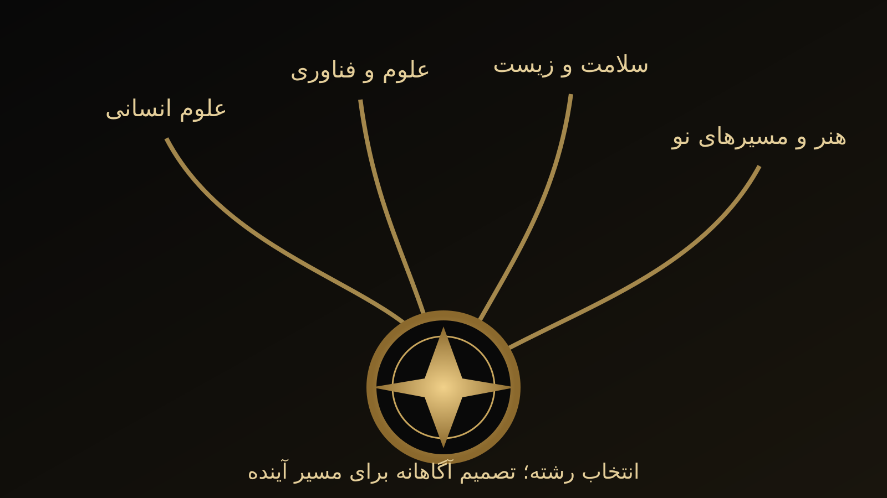
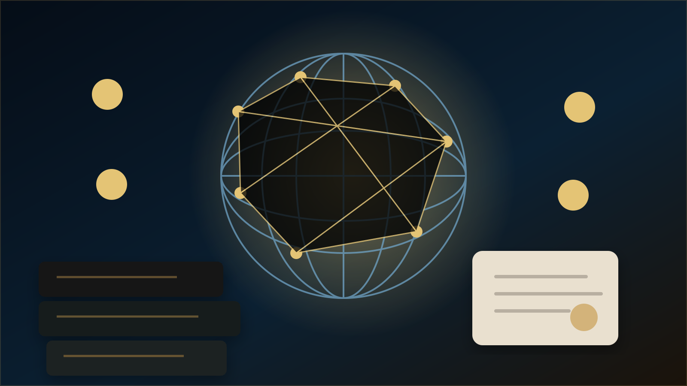

Humanability؛ بازاندیشی در سنجش آموزشی
تحلیل و توضیح آموزشی، جدا از خبر وابسته به زمان.
JREI · مرکز هوشمند رسانه آموزشی
JREI NEWSEVIDENCE · EDUCATION · INTELLIGENCE
رسانه دوزبانه آموزش و آزمونها؛ با تفکیک خبر فوری، اطلاعیه رسمی، تحلیل و فرصتهای تحصیلی.
فقط خبرهایی که منبع و انتشار معتبر دارند وارد جریان رسمی رسانه میشوند.
خبر اول پس از احراز انتشار و منبع رسمی در این جایگاه قرار میگیرد.
بازنشر بدون سند رسمی انجام نمیشود.
جزئیات و راهنمای اقداماولویت «فوری» فقط برای خبرهای تأییدشده و دارای فوریت معتبر است.
اولویت «فوری» فقط برای خبرهای تأییدشده و دارای فوریت معتبر است.
آخرین خبرهای منتشرشده در سامانه؛ بدون تیتر ساختگی.
هنوز خبر رسمی منتشرشدهای برای این بخش در دسترس نیست؛ برای اطلاعیههای جاری به مرجع صادرکننده مراجعه کنید.
اطلاعیههایی که منبع اولیه و رسید انتشار دارند.
هنوز خبر رسمی منتشرشدهای برای این بخش در دسترس نیست؛ برای اطلاعیههای جاری به مرجع صادرکننده مراجعه کنید.
نمایش تاریخهای واقعی با لینک مرجع رسمی و وضعیت بازبینی.
ثبتنامها و مهلتهایی که از تقویم رسمی قابل استخراجاند.
تا تأیید و اتصال تقویم رسمی، تاریخ یا مهلتی نمایش داده نمیشود.
نتایج اولیه و نهاییِ دارای مرجع معتبر.
پذیرش، برنامهها و اطلاعیههای دانشگاهی.
هنوز خبر رسمی منتشرشدهای برای این بخش در دسترس نیست؛ برای اطلاعیههای جاری به مرجع صادرکننده مراجعه کنید.
بورسیه، پژوهش، کنفرانس و پذیرش بینالمللی.
هنوز خبر رسمی منتشرشدهای برای این بخش در دسترس نیست؛ برای اطلاعیههای جاری به مرجع صادرکننده مراجعه کنید.
مدارس، معلمان، سیاست آموزشی و امتحانات.
هنوز خبر رسمی منتشرشدهای برای این بخش در دسترس نیست؛ برای اطلاعیههای جاری به مرجع صادرکننده مراجعه کنید.
استخدام، مصاحبه و صلاحیت حرفهای.
هنوز خبر رسمی منتشرشدهای برای این بخش در دسترس نیست؛ برای اطلاعیههای جاری به مرجع صادرکننده مراجعه کنید.
پژوهش هوش مصنوعی، فناوری یادگیری و سنجش.
هنوز خبر رسمی منتشرشدهای برای این بخش در دسترس نیست؛ برای اطلاعیههای جاری به مرجع صادرکننده مراجعه کنید.
تحلیل و توضیح آموزشی، جدا از خبر وابسته به زمان.
تحلیل و توضیح آموزشی، جدا از خبر وابسته به زمان.
تحلیل و توضیح آموزشی، جدا از خبر وابسته به زمان.
تحلیل و توضیح آموزشی، جدا از خبر وابسته به زمان.
گزارشهای تفصیلی، گفتگو و پروندههای علمی.
گزارشهای تفصیلی، گفتگو و پروندههای علمی.
مطالعه گزارشهای ویژه و تحلیلهای موجودرتبهبندی فقط از آمار واقعی و قابل ممیزی انجام میشود؛ عدد یا بازدید فرضی نمایش داده نمیشود.
رتبهبندی فقط از آمار واقعی و قابل ممیزی انجام میشود؛ عدد یا بازدید فرضی نمایش داده نمیشود.
مشاهده آرشیوموضوع مورد علاقه را انتخاب کنید؛ انتخاب فعلاً فقط همین صفحه را فیلتر میکند و ذخیره یا ارسال نمیشود.
موضوع مورد علاقه را انتخاب کنید؛ انتخاب فعلاً فقط همین صفحه را فیلتر میکند و ذخیره یا ارسال نمیشود.
هنوز خبر رسمی منتشرشدهای برای این بخش در دسترس نیست؛ برای اطلاعیههای جاری به مرجع صادرکننده مراجعه کنید.
سه پرسش ضروری: مرجع اصلی کدام است؟ اطلاعیه چه تاریخی دارد؟ اصلاحیه جدیدتری وجود دارد؟
نشانی رسمی نهاد صادرکننده را بررسی کنید.
تاریخ انتشار، مهلت و منطقه زمانی را تطبیق دهید.
اطلاعیه جدید یا پسگرفتن خبر را جستوجو کنید.
جستوجوی متن، موضوع، کشور و بازه زمانی از آرشیو تأییدشده.
جستوجوی متن، موضوع، کشور و بازه زمانی از آرشیو تأییدشده.
فرم جستوجوی کامل و فیلتر کشور/تاریخ در انتهای همین صفحه قرار دارد.
JREI News · آرشیو تأییدشده
این بخش فقط خبرهایی را نمایش میدهد که مراحل بررسی منابع، تأیید سردبیری و انتشار را گذرانده باشند. تا زمان فعالسازی رسمی آرشیو، مقالهها و راهنماهای موجود در همین صفحه همچنان در دسترساند.
تنظیم دریافت اخبار باید با رضایت و امکان لغو در حساب شخصی انجام شود.
تنظیم دریافت اخبار باید با رضایت و امکان لغو در حساب شخصی انجام شود.
پرسش آموزشی را با دستیار و ابزارهای موجود JREI دنبال کنید؛ پاسخ هوش مصنوعی جای منبع رسمی را نمیگیرد.
پرسش آموزشی را با دستیار و ابزارهای موجود JREI دنبال کنید؛ پاسخ هوش مصنوعی جای منبع رسمی را نمیگیرد.
مسیرهای مرتبط، اختیاری و با اولویت منفعت آموزشی خواننده نمایش داده میشوند.
مسیرهای مرتبط، اختیاری و با اولویت منفعت آموزشی خواننده نمایش داده میشوند.
اخبار و اطلاعیهها
در این بخش، گزارشهای تحلیلی توسعه علمی و آموزشی، اخبار و اطلاعیههای معتبر و معرفی مسئولانه خدمات گردآوری شدهاند. برای بررسی تفصیلی مفاهیم و موضوعات ماندگار، کتابخانه «راهنماها» مسیر مطالعه عمیقتر را فراهم میکند.
روایت مستند توسعه خدمات، برنامههای پژوهشی و مسیرهای استفاده؛ هر مطلب به صفحه اصلی خدمت پیوند میدهد.
گزارشی مطابق جستوجوی شما پیدا نشد.

معرفی خدمات · ۱۱ اکتبر ۲۰۲۶
معرفی نقشه یکپارچه پژوهش، آموزش، مشاوره، Golden Talent، فروشگاه و حمایت تحصیلی با توضیح مسئولانه وضعیت خدمات.

معرفی خدمات · ۱۱ اکتبر ۲۰۲۶
چگونه میان خدمات مشاوره، پژوهش، استعدادیابی و همکاری سازمانی بر اساس مسئله و خروجی مورد انتظار انتخاب کنیم؟

معرفی خدمات · ۱۱ اکتبر ۲۰۲۶
آشنایی با Golden Talent و نگاه رشدگرا به استعداد؛ چرا یک آزمون یا نمره برای شناخت ظرفیت فرد کافی نیست؟

معرفی خدمات · ۱۱ اکتبر ۲۰۲۶
معرفی سازوکار کمک داوطلبانه، تأیید نیاز، بورسیه و پیگیری هزینه با حفاظت از هویت دانشآموز.

معرفی خدمات · ۱۱ اکتبر ۲۰۲۶
معرفی تجربه خرید کتاب، شرایط ارسال، حقوق نشر و تفاوت خرید تجاری با حمایت مالی داوطلبانه.

معرفی خدمات · ۱۱ اکتبر ۲۰۲۶
طراحی داشبورد تبمحور و موبایلفرست برای پیگیری خدمات و پرداختهای واقعی با دسترسی خصوصی و مبتنی بر نقش.

معرفی خدمات · ۱۱ اکتبر ۲۰۲۶
مشاوره تحصیلی بر پایه شواهد، علاقه و شرایط فرد؛ توضیح محدودیت نمره، رتبه و توصیههای آماده.

گزارش تحلیلی · ۱۱ اکتبر ۲۰۲۶
از صورتبندی پرسش پژوهش و بازنگری علمی مقاله تا انتخاب مجله و پاسخ به داوران با رعایت اخلاق پژوهش.

گزارش تحلیلی · ۱۱ اکتبر ۲۰۲۶
چرا نیازسنجی مدرسه، قضاوت حرفهای معلم و بازخورد عملی از برگزاری صرف کارگاه مهمتر است؟

گزارش تحلیلی · ۱۱ اکتبر ۲۰۲۶
معرفی مسئولانه پیشنهاد پژوهشی Humanability و نسبت آن با روایی، پایایی، عدالت و تجربه انسانی آزموندهنده.

گزارش تحلیلی · ۱۱ اکتبر ۲۰۲۶
چشمانداز همکاری بینالمللی در آموزش و سنجش با تفکیک طرح، دعوت و همکاری رسمی تأییدشده.

گزارش تحلیلی · ۱۱ اکتبر ۲۰۲۶
راهنمای گامبهگام پیدا کردن خدمت، خواندن شرایط، ثبتنام ایمیلی، خرید کتاب و پیگیری پرداخت.

گزارش تحلیلی · ۱۱ اکتبر ۲۰۲۶
چگونه محتوای علمی اصیل، پیوندهای معنایی و داده ساختاریافته به کشفپذیری کمک میکنند، بدون تضمین رتبه؟

انتخاب رشته ۱۴۰۵
محتوای سالمحور درباره تصمیم انتخاب رشته و استفاده از اطلاعات رسمی همان سال.

فراخوان بینالمللی · JHELA
دعوت از پژوهشگران و اعضای هیئت علمی برای همکاری علمی و داوری در پروژه مجله.
Evergreen Guides
توضیح علمی و حرفهای
در حوزه آموزش، برخی اطلاعات مانند شرایط پذیرش دانشگاه یا زمان فراخوانها به تاریخ انتشار و مرجع رسمی وابستهاند. این دادهها ممکن است در فاصلهای کوتاه تغییر کنند؛ بنابراین بازنشر آنها بدون تاریخ و منبع معتبر میتواند حتی با نیت کمک، مخاطب را در تصمیمی پرپیامد دچار اشتباه کند. از این رو، در این بخش خبر به مثابه اطلاعات وابسته به زمان ارائه میشود و تحلیلهای پایدارتر در بخش راهنماهای علمی قرار میگیرند.
پیشنهاد میشود خواننده هنگام مواجهه با هر فراخوان یا اطلاعیه، علاوه بر عنوان، تاریخ اعتبار، مرجع صادرکننده و شرایط اختصاصی را بررسی کند. تفسیر تربیتی و مشاورهای میتواند به فهم پیامد خبر کمک کند، اما جایگزین سند رسمی یا مقررات جاری نیست.